The World Sample
11:00
From 11:00, hard light
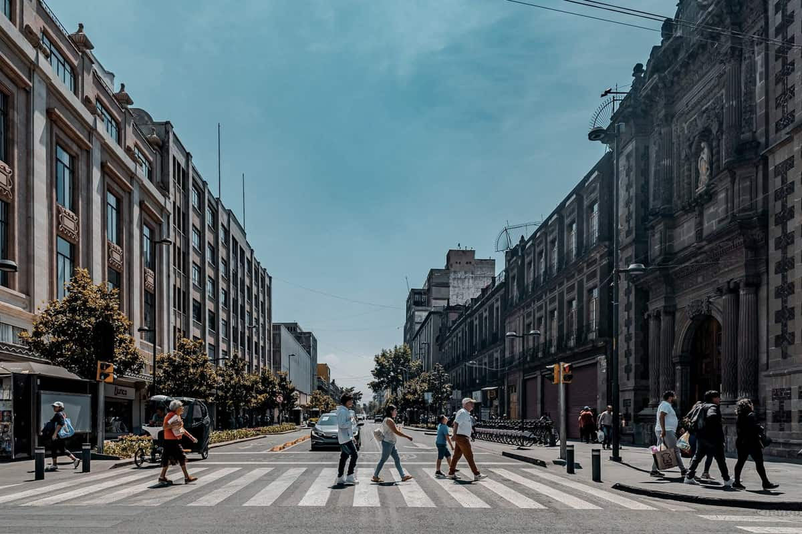
11:00 · still on the crossing
Vest, bags, mid-stride
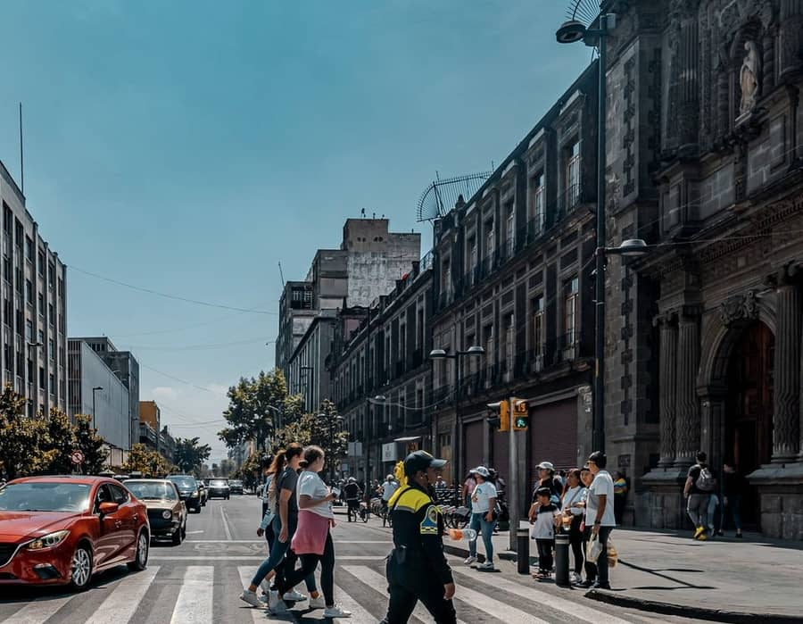
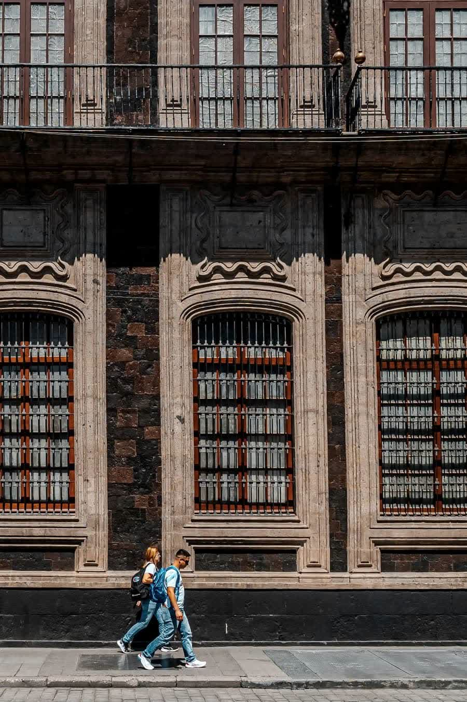
A police officer in a yellow high-visibility vest crosses with pedestrians. Centro Histórico, Ciudad de México. Midday, 3 March 2024.
A man in a blue shirt with a backpack and a woman in white walk past the Valparaíso Palace façade. Same district. Midday, 3 March 2024.
12:00 · noon denser
Closer. More frames.
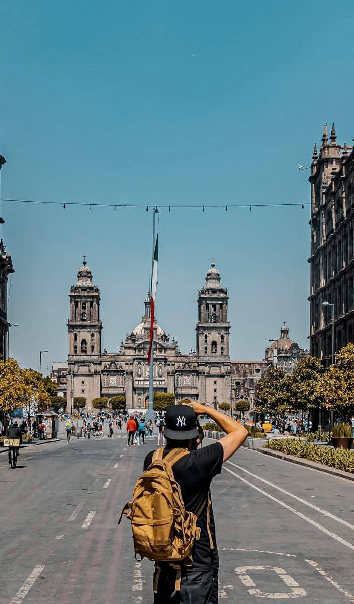
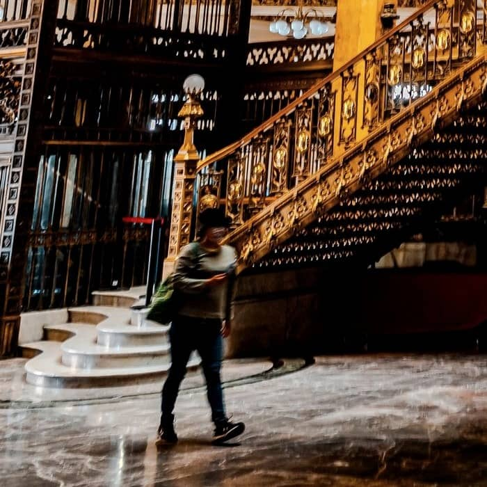
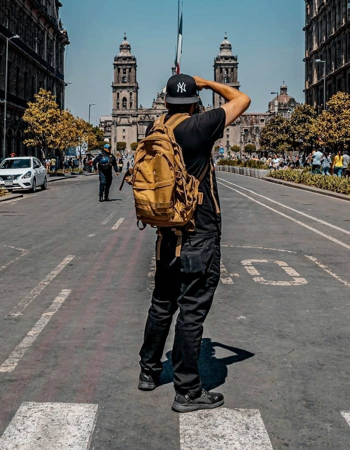
Left — a man in black with a mustard backpack photographs from a crosswalk. Centre — a woman in a green sweater walks the Palacio Postal marble floor. Right — the same photographer, mid-street toward the cathedral. Ciudad de México. Harsh midday, 3 March 2024.
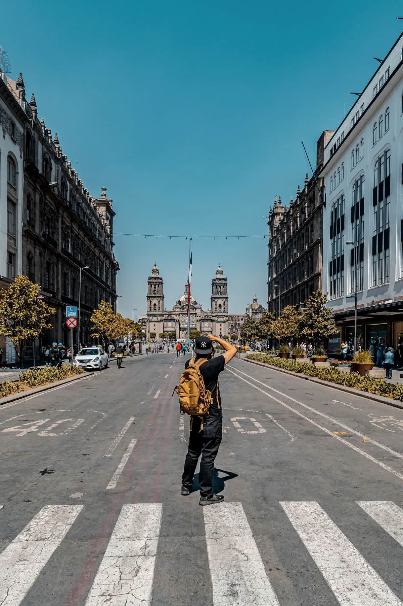
Full frame: the photographer holds the cathedral axis from the centre of the street. Centro Histórico, Ciudad de México. Midday, 3 March 2024.
13:00 · indoors, one person
Green sweater, gold rail
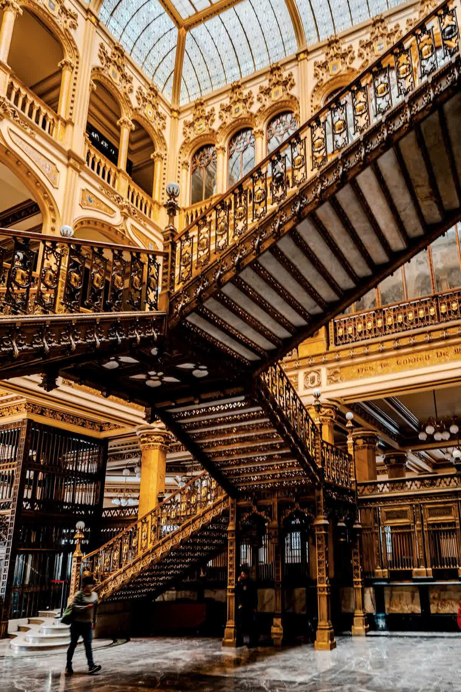
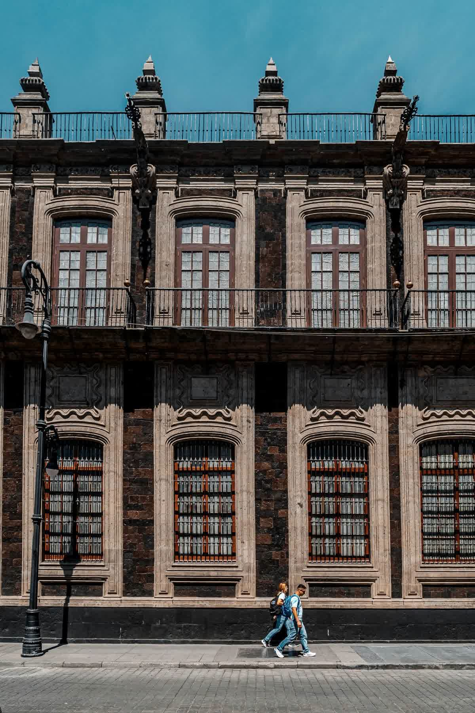
A woman in a green sweater walks the Palacio Postal hall; another person sits on the stair. Ciudad de México. Daytime interior, 3 March 2024.
Two pedestrians pass the Valparaíso Palace windows. Centro Histórico. Midday, 3 March 2024.
14:00 · one other looking
Same shooter, wider
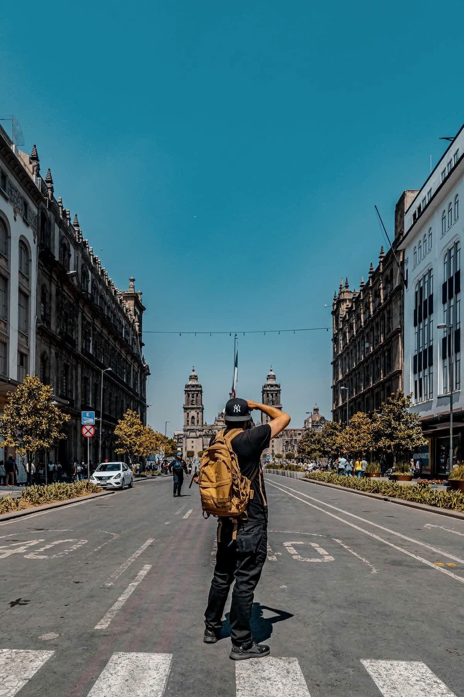
The same photographer, from behind, still mid-street toward the Metropolitan Cathedral. Centro Histórico, Ciudad de México. Midday, 3 March 2024.
15:00 · one plate
The tower says the hour
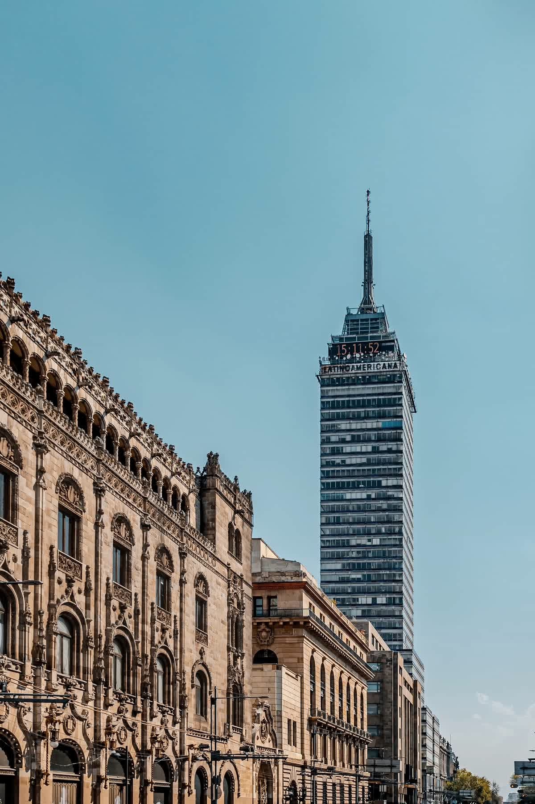
Palacio Postal stone against Torre Latinoamericana; the tower clock reads 15:11. Ciudad de México. Mid-afternoon, 3 March 2024.
Field notes
11:00 — Crossing south of the square. People first.
12:00 — Tighter. More frames. Same hard light.
13:00 — Into the post hall; one figure on marble.
14:00 — Another photographer still in the axis.
15:11 — Latinoamericana clock. Stop.
Write: desk@theworld.example
Tell us the place and the hours you want held.
Colophon
Photos: Jimmy Elizarraras / Pexels License. Centro Histórico, Ciudad de México, 3 March 2024. Free-licence set is daytime only (~11:00–15:11); dawn and dusk were not available. Place names stay in the captions. Neutral grade. People-first frames lead.
Sample by Solved Tech: websites, apps and automation for small businesses. Concept site for demonstration, not a client case study. See licences.md.